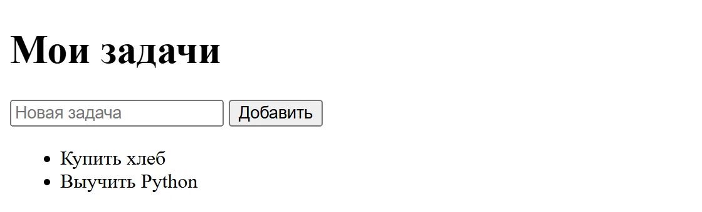
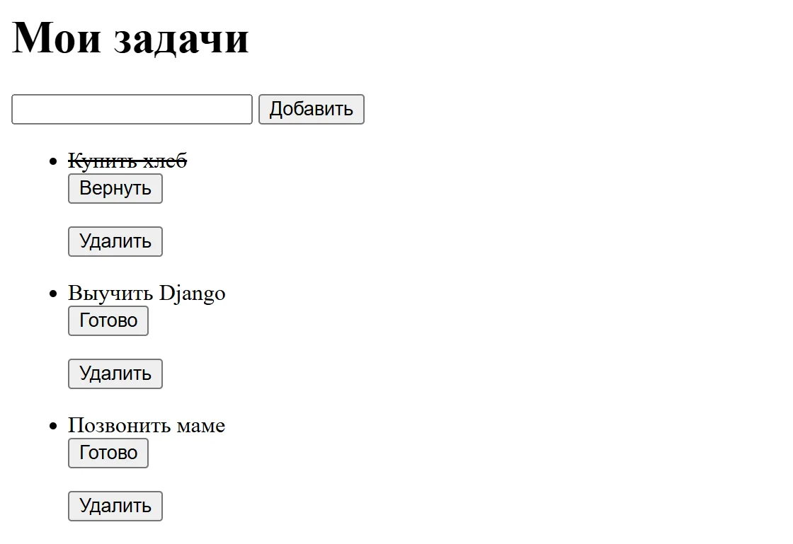

Первый проект: список задач
Сделаем одно и то же приложение — список задач — двумя способами: на Flask и на Django. Выберите один вариант и пройдите его до конца. В каждом две части: сначала простейший список, затем база данных, удаление и отметка «выполнено». На Flask уйдёт около 30 минут, на Django — около часа.
Только начинаете? Сначала пройдите уроки «С нуля», а незнакомые слова смотрите в словаре.

Что понадобится
Проверьте это до начала — так шаги пройдут без ошибок. Не знаете, как поставить Python и открыть терминал? Сначала пройдите «Подготовку компьютера».
- Python 3.12 или новее: команда
python --versionв терминале. - Редактор кода, например VS Code.
- Отдельная пустая папка для проекта, открытая в терминале.
- Базовый Python: функции, списки, словари (шаг 1 дорожной карты).
Команды для Windows. На macOS и Linux вместо python пишите python3,
а виртуальное окружение активируйте командой source .venv/bin/activate.
Отмеченные шаги сохраняются в этом браузере — можно вернуться позже и продолжить.
Если что-то пошло не так, загляните в частые ошибки внизу страницы.
Вариант 1. Список задач на Flask
Flask 3.1, около 30 минут. Одно приложение в одном файле: страница со списком и форма добавления задачи.
0 из 6 шагов пройдено
-
Шаг 1. Создайте окружение и установите Flask
Виртуальное окружение хранит библиотеки проекта отдельно от остальной системы. Команды немного отличаются для Windows и для macOS с Linux: выберите свою систему, сайт запомнит выбор.
Windows (PowerShell или командная строка)
Терминалpython -m venv .venv .venv\Scripts\activate pip install flaskmacOS и Linux (Терминал)
Терминалpython3 -m venv .venv source .venv/bin/activate pip install flaskОжидаемый результат
В папке проекта появилась папка
.venv, а в начале строки терминала — приписка(.venv): окружение включено. Последняя строка после установки:Successfully installed blinker-1.9.0 click-8.5.1 flask-3.1.3 itsdangerous-2.2.0 jinja2-3.1.6 markupsafe-3.0.4 werkzeug-3.1.9
Номера версий могут быть новее — это нормально. Проверить установку можно командой
flask --version: она покажет версии Python, Flask и Werkzeug. -
Шаг 2. Напишите приложение
Создайте файл
app.py. Задачи пока хранятся в обычном списке — в памяти сервера.app.pyfrom flask import Flask, redirect, render_template_string, request, url_for app = Flask(__name__) tasks = [] PAGE = """ <!doctype html> <title>Мои задачи</title> <h1>Мои задачи</h1> <form method="post"> <input name="title" placeholder="Новая задача" required> <button>Добавить</button> </form> <ul> {% for task in tasks %}<li>{{ task }}</li>{% endfor %} </ul> """ @app.route("/", methods=["GET", "POST"]) def index(): if request.method == "POST": title = request.form.get("title", "").strip() if title: tasks.append(title) return redirect(url_for("index")) return render_template_string(PAGE, tasks=tasks)Ожидаемый результат
Терминал пока ничего не выводит: файл только создан, сервер запустим на следующем шаге. В папке проекта теперь два элемента:
.venv/ app.py
Имя файла важно: в шаге 3 команда
flask --app appищет именноapp.py. -
Шаг 3. Запустите сервер
Флаг
--debugперезапускает сервер при каждом сохранении файла и показывает понятные ошибки.Терминалflask --app app run --debugОжидаемый результат
Терминал покажет примерно это и останется занятым сервером:
* Serving Flask app 'app' * Debug mode: on WARNING: This is a development server. Do not use it in a production deployment. Use a production WSGI server instead. * Running on http://127.0.0.1:5000 Press CTRL+C to quit * Restarting with stat * Debugger is active! * Debugger PIN: 700-095-102
Строка WARNING — не ошибка: Flask напоминает, что встроенный сервер только для разработки. PIN у вас будет другим. Не закрывайте это окно, а новые команды вводите во втором окне терминала.
-
Шаг 4. Проверьте результат
Откройте в браузере
http://127.0.0.1:5000/и добавьте пару задач. Обратите внимание: после перезапуска сервера список очищается — данные жили только в памяти. Сохранять их между запусками умеет база данных, это следующий шаг.Как должно выглядеть

Две задачи добавлены через форму. Оформления пока нет: это чистый HTML без CSS. -
Часть 2. База данных и удаление
Шаг 5. Храните задачи в SQLite
Замените весь
app.pyэтим кодом. Модульsqlite3входит в Python, ничего устанавливать не нужно. Файл базыtasks.dbпоявится рядом сapp.pyпри первом запуске. Знаки?в запросах — параметры: Python сам безопасно подставит значения, поэтому ввод пользователя не сможет изменить сам SQL-запрос. Подробнее — в разделе «Базы данных».app.pyimport sqlite3 from pathlib import Path from flask import Flask, redirect, render_template_string, request, url_for app = Flask(__name__) DB = Path(__file__).with_name("tasks.db") PAGE = """ <!doctype html> <title>Мои задачи</title> <h1>Мои задачи</h1> <form method="post" action="{{ url_for('add') }}"> <input name="title" placeholder="Новая задача" required> <button>Добавить</button> </form> <ul> {% for task in tasks %} <li> {{ task["title"] }} <form method="post" action="{{ url_for('delete', task_id=task['id']) }}"> <button>Удалить</button> </form> </li> {% endfor %} </ul> """ def query(sql, params=()): conn = sqlite3.connect(DB) conn.row_factory = sqlite3.Row try: rows = conn.execute(sql, params).fetchall() conn.commit() return rows finally: conn.close() query("CREATE TABLE IF NOT EXISTS tasks (id INTEGER PRIMARY KEY, title TEXT NOT NULL)") @app.get("/") def index(): tasks = query("SELECT id, title FROM tasks ORDER BY id") return render_template_string(PAGE, tasks=tasks) @app.post("/add") def add(): title = request.form.get("title", "").strip() if title: query("INSERT INTO tasks (title) VALUES (?)", (title,)) return redirect(url_for("index")) @app.post("/delete/<int:task_id>") def delete(task_id): query("DELETE FROM tasks WHERE id = ?", (task_id,)) return redirect(url_for("index"))Этот же код запустится прямо здесь: Python и Flask загрузятся в браузер (около 15 МБ, только при первом нажатии). Добавляйте и удаляйте задачи в окне ниже, как на своём компьютере.
Ожидаемый результат
После сохранения сервер с флагом
--debugперезапустится сам, и рядом сapp.pyпоявится файл базы:.venv/ __pycache__/ app.py tasks.db
У каждой задачи на странице теперь есть кнопка «Удалить». Когда вы добавляете задачу, в терминале сервера появляются две строки:
127.0.0.1 - - [17/Nov/2026 06:00:21] "POST /add HTTP/1.1" 302 - 127.0.0.1 - - [17/Nov/2026 06:00:21] "GET / HTTP/1.1" 200 -
Код 302 — перенаправление: после сохранения сервер отправляет браузер обратно на главную, и тот загружает её заново (код 200 — успешно). Папку
__pycache__создаёт сам Python, её можно не трогать. -
Шаг 6. Проверьте, что данные сохраняются
Запустите сервер той же командой, добавьте пару задач и удалите одну. Затем остановите сервер (Ctrl + C) и запустите снова — задачи останутся на месте. Удаление сделано через
POST, а не обычную ссылку: изменяющие данные действия не должны выполняться простым переходом по адресу.Проверка пустой задачи стоит в двух местах. Атрибут
requiredостанавливает пустую форму в браузере, но запрос можно отправить и в обход формы, поэтому функцияaddсама убирает пробелы и не сохраняет пустой заголовок. А вот защиты от подделки запросов (CSRF) в этом примере нет: для настоящего сайта подключите Flask-WTF или сделайте проект на Django, где она включена сразу.Как должно выглядеть

Три задачи добавлены, одна удалена. После перезапуска сервера список тот же.
Проверь себя
Ответьте мысленно, затем откройте ответ.
Почему в шаге 4 список задач пропадал после перезапуска сервера?
Задачи хранились в списке tasks в памяти работающей программы. Когда сервер останавливается, программа завершается и память очищается. В шаге 5 задачи записываются в файл tasks.db, а он остаётся на диске.
Зачем в SQL-запросах стоят знаки ?, а не f-строка с названием задачи?
Знак ? — параметр: sqlite3 передаёт значение в базу отдельно от текста запроса. Даже название вроде '); DROP TABLE tasks; -- сохранится как обычный текст. F-строка вставила бы его прямо в SQL, и запрос можно было бы изменить — это называется SQL-инъекцией.
Что будет, если открыть в браузере адрес http://127.0.0.1:5000/delete/1?
Flask ответит ошибкой 405 Method Not Allowed: маршрут объявлен через @app.post и принимает только POST. Переход по адресу — это запрос GET, поэтому задача не удалится. Удалить её можно только отправкой формы.
Зачем функция add после сохранения возвращает redirect, а не саму страницу?
Если ответить страницей прямо на POST, то при обновлении страницы браузер отправит форму ещё раз и задача добавится повторно. Перенаправление заставляет браузер загрузить главную обычным запросом GET — это те самые строки 302 и 200 в терминале из шага 5.
Самостоятельное задание
Добавьте под списком кнопку «Удалить все», которая удаляет все задачи сразу. Удаление должно срабатывать только при отправке формы (POST), а не при переходе по адресу.
Показать решение
Нужны две правки в app.py: форма в конце шаблона PAGE и новый маршрут в конце файла. Остальной код шага 5 не меняется.
PAGE = """
<!doctype html>
<title>Мои задачи</title>
<h1>Мои задачи</h1>
<form method="post" action="{{ url_for('add') }}">
<input name="title" placeholder="Новая задача" required>
<button>Добавить</button>
</form>
<ul>
{% for task in tasks %}
<li>
{{ task["title"] }}
<form method="post" action="{{ url_for('delete', task_id=task['id']) }}">
<button>Удалить</button>
</form>
</li>
{% endfor %}
</ul>
<form method="post" action="{{ url_for('clear') }}">
<button>Удалить все</button>
</form>
"""
# ... функции query, index, add и delete без изменений ...
@app.post("/clear")
def clear():
query("DELETE FROM tasks")
return redirect(url_for("index"))Проверка: добавьте две-три задачи и нажмите «Удалить все» — список опустеет и останется пустым после перезапуска сервера. Адрес /clear, открытый в браузере, ответит 405.
Что дальше
- Вынесите HTML в шаблон
templates/index.htmlи используйтеrender_template. - Добавьте отметку «выполнено»: колонка
done INTEGER DEFAULT 0и запросUPDATE. - Опубликуйте приложение в интернете — инструкция в разделе «Публикация».
Вариант 2. Список задач на Django
Django 6.1, около 60 минут. Задачи хранятся в базе данных SQLite, а добавлять их можно через встроенную админ-панель.
0 из 10 шагов пройдено
-
Шаг 1. Установите Django и создайте проект
Точка в конце команды создаёт проект в текущей папке. Затем создаём приложение
tasks.Windows (PowerShell или командная строка)
Терминалpython -m venv .venv .venv\Scripts\activate pip install django django-admin startproject mysite . python manage.py startapp tasksmacOS и Linux (Терминал)
Терминалpython3 -m venv .venv source .venv/bin/activate pip install django django-admin startproject mysite . python manage.py startapp tasksОжидаемый результат
Последняя строка после установки:
Successfully installed asgiref-3.13.0 django-6.1.3 sqlparse-0.6.1
Команды
startprojectиstartappничего не выводят: если сообщения об ошибке нет, всё получилось. В папке появились:.venv/ manage.py mysite/ __init__.py asgi.py settings.py urls.py wsgi.py tasks/ migrations/ __init__.py __init__.py admin.py apps.py models.py tests.py views.pyНомера версий могут быть новее. Ещё может появиться служебная папка
__pycache__— её создаёт Python. -
Шаг 2. Подключите приложение
В файле
mysite/settings.pyдобавьте строку'tasks',в конец спискаINSTALLED_APPS.mysite/settings.pyINSTALLED_APPS = [ 'django.contrib.admin', 'django.contrib.auth', 'django.contrib.contenttypes', 'django.contrib.sessions', 'django.contrib.messages', 'django.contrib.staticfiles', 'tasks', ]Ожидаемый результат
Проверьте настройки командой
python manage.py check. Если всё верно, она ответит:System check identified no issues (0 silenced).
В файле, который создаёт Django 6.1, строки записаны в двойных кавычках:
"django.contrib.admin". Можно добавить и"tasks",, и'tasks',— для Python это одно и то же. -
Шаг 3. Опишите модель и зарегистрируйте её в админке
Модель — это таблица базы данных, описанная классом Python. ORM сама создаст для неё SQL.
tasks/models.pyfrom django.db import models class Task(models.Model): title = models.CharField(max_length=200) done = models.BooleanField(default=False) def __str__(self): return self.titletasks/admin.pyfrom django.contrib import admin from .models import Task admin.site.register(Task)Ожидаемый результат
Видимых изменений пока нет: таблица для модели появится в базе только после миграций на шаге 4. Убедиться, что в коде нет опечаток, можно той же командой
python manage.py check:System check identified no issues (0 silenced).
-
Шаг 4. Создайте таблицы и администратора
Миграции переносят модели в базу данных. Последняя команда спросит логин и пароль для входа в админку.
Терминалpython manage.py makemigrations python manage.py migrate python manage.py createsuperuserОжидаемый результат
Первая команда создаёт файл миграции, вторая — таблицы в базе, третья задаёт вопросы:
Migrations for 'tasks': tasks/migrations/0001_initial.py + Create model Task Operations to perform: Apply all migrations: admin, auth, contenttypes, sessions, tasks Running migrations: Applying contenttypes.0001_initial... OK … Applying tasks.0001_initial... OK Username (leave blank to use 'root'): admin Email address: Password: Password (again): Superuser created successfully.Рядом с
manage.pyпоявился файл базыdb.sqlite3, а в папкеtasks/migrations/— файл0001_initial.py.Строк Applying всего 19, здесь часть пропущена. Вместо root будет имя вашей учётной записи. Пароль при вводе не отображается — так и должно быть. Если пароль короткий или простой, Django предупредит об этом и спросит
Bypass password validation and create user anyway? [y/N]: для учебного проекта на своём компьютере можно ответить y. -
Шаг 5. Сделайте страницу со списком
Представление получает задачи из базы, шаблон выводит их списком, маршрут связывает адрес с представлением. Шаблон положите в папку
tasks/templates/tasks/— Django найдёт его сам.tasks/views.pyfrom django.shortcuts import render from .models import Task def index(request): return render(request, "tasks/index.html", {"tasks": Task.objects.all()})tasks/templates/tasks/index.html<h1>Мои задачи</h1> <ul> {% for task in tasks %} <li>{{ task.title }}{% if task.done %} (готово){% endif %}</li> {% empty %} <li>Задач пока нет — добавьте их в админке.</li> {% endfor %} </ul>mysite/urls.pyfrom django.contrib import admin from django.urls import path from tasks import views urlpatterns = [ path("admin/", admin.site.urls), path("", views.index), ]Ожидаемый результат
Сервер запустим на следующем шаге. Пока проверьте, что шаблон лежит на своём месте:
tasks/ migrations/ templates/ tasks/ index.html admin.py models.py views.py …Команда
python manage.py checkснова должна ответитьSystem check identified no issues (0 silenced).Пока задач нет, на шаге 6 главная страница покажет заголовок «Мои задачи» и строку «Задач пока нет — добавьте их в админке.» -
Шаг 6. Запустите и проверьте
Откройте
http://127.0.0.1:8000/admin/, войдите и добавьте несколько задач. Затем откройтеhttp://127.0.0.1:8000/— задачи появятся в списке и сохранятся после перезапуска сервера.Терминалpython manage.py runserverКак должно выглядеть

Админка по адресу /admin/: три задачи добавлены кнопкой Add task. Админка на английском, язык меняет настройка LANGUAGE_CODE. -
Часть 2. Работа без админки
Шаг 7. Создайте форму
ModelFormстроит форму прямо по модели: сама проверяет длину названия и сохраняет задачу в базу. Создайте новый файлtasks/forms.py.tasks/forms.pyfrom django import forms from .models import Task class TaskForm(forms.ModelForm): class Meta: model = Task fields = ["title"]Ожидаемый результат
Страница пока не изменилась: форма появится, когда вы обновите представление и шаблон в шагах 8 и 9. Команда
python manage.py checkдолжна ответить:System check identified no issues (0 silenced).
-
Шаг 8. Добавьте представления и маршруты
Замените
tasks/views.pyиmysite/urls.pyцеликом. Декоратор@require_POSTразрешает менять данные только отправкой формы, а не переходом по ссылке. Имена маршрутов (name="index") нужны, чтобы ссылаться на них из шаблона.tasks/views.pyfrom django.shortcuts import get_object_or_404, redirect, render from django.views.decorators.http import require_POST from .forms import TaskForm from .models import Task def index(request): if request.method == "POST": form = TaskForm(request.POST) if form.is_valid(): form.save() return redirect("index") else: form = TaskForm() return render(request, "tasks/index.html", {"tasks": Task.objects.all(), "form": form}) @require_POST def toggle(request, pk): task = get_object_or_404(Task, pk=pk) task.done = not task.done task.save() return redirect("index") @require_POST def delete(request, pk): get_object_or_404(Task, pk=pk).delete() return redirect("index")mysite/urls.pyfrom django.contrib import admin from django.urls import path from tasks import views urlpatterns = [ path("admin/", admin.site.urls), path("", views.index, name="index"), path("tasks/<int:pk>/toggle/", views.toggle, name="toggle"), path("tasks/<int:pk>/delete/", views.delete, name="delete"), ]Ожидаемый результат
python manage.py checkснова отвечаетSystem check identified no issues (0 silenced).Главная страница выглядит как раньше: представление уже передаёт форму, но старый шаблон её не выводит. Если сервер запущен, он перезапустится сам после сохранения файлов. -
Шаг 9. Обновите шаблон
Тег
{% csrf_token %}обязателен в каждой форме сmethod="post": он защищает от подделки запросов с чужих сайтов. Без него Django ответит ошибкой 403.tasks/templates/tasks/index.html<h1>Мои задачи</h1> <form method="post"> {% csrf_token %} {{ form.title }} <button>Добавить</button> {{ form.title.errors }} </form> <ul> {% for task in tasks %} <li> {% if task.done %}<s>{{ task.title }}</s>{% else %}{{ task.title }}{% endif %} <form method="post" action="{% url 'toggle' task.pk %}"> {% csrf_token %} <button>{% if task.done %}Вернуть{% else %}Готово{% endif %}</button> </form> <form method="post" action="{% url 'delete' task.pk %}"> {% csrf_token %} <button>Удалить</button> </form> </li> {% empty %} <li>Задач пока нет.</li> {% endfor %} </ul>Ожидаемый результат
Обновите страницу
http://127.0.0.1:8000/: над списком появятся поле ввода и кнопка «Добавить». Поле Django построил по модели — в коде страницы (Ctrl + U, на macOS Cmd + Option + U) оно выглядит так:<input type="text" name="title" maxlength="200" required id="id_title">
Ограничение
maxlength="200"взято изmax_length=200в модели, аrequired— потому что поле обязательное. В каждой форме есть и скрытое полеcsrfmiddlewaretoken: его добавляет тег{% csrf_token %}. -
Шаг 10. Проверьте
Запустите
python manage.py runserverи откройтеhttp://127.0.0.1:8000/. Добавьте задачу, отметьте её кнопкой «Готово» — она станет зачёркнутой, — затем удалите. Попробуйте добавить пустую задачу: форма покажет ошибку, а в базу ничего не попадёт. Миграции делать не нужно — модель не менялась.Как должно выглядеть

Первая задача отмечена кнопкой «Готово» и стала зачёркнутой.
Проверь себя
Ответьте мысленно, затем откройте ответ.
Что будет, если забыть добавить 'tasks' в INSTALLED_APPS?
Команда makemigrations ответит «No changes detected»: Django не знает о приложении, поэтому не видит его модели и не ищет шаблоны в его папке templates.
Чем makemigrations отличается от migrate?
makemigrations сравнивает модели с прошлыми миграциями и записывает изменения в новый файл, например tasks/migrations/0001_initial.py. Это план. migrate выполняет такие планы в базе данных: создаёт и меняет таблицы. После правки модели нужны обе команды.
Что случится, если убрать {% csrf_token %} из формы?
Отправка формы закончится ошибкой «Forbidden (403) CSRF verification failed». Django проверяет, что форма пришла со страницы этого же сайта, а не с чужого, и без токена отклоняет любой POST-запрос.
Зачем в пути шаблона дважды встречается tasks: tasks/templates/tasks/index.html?
Django собирает шаблоны из папок templates всех приложений в один общий список. Вторая папка tasks работает как пространство имён: представление просит "tasks/index.html", и шаблон не перепутается с index.html другого приложения.
Самостоятельное задание
Добавьте под списком кнопку «Удалить выполненные»: она удаляет все задачи, отмеченные кнопкой «Готово», и оставляет остальные. Данные должны меняться только отправкой формы с проверкой CSRF.
Показать решение
Нужны новое представление, маршрут и форма в шаблоне. Модель не меняется, поэтому миграции не нужны.
@require_POST
def clear_done(request):
Task.objects.filter(done=True).delete()
return redirect("index")from django.contrib import admin
from django.urls import path
from tasks import views
urlpatterns = [
path("admin/", admin.site.urls),
path("", views.index, name="index"),
path("tasks/<int:pk>/toggle/", views.toggle, name="toggle"),
path("tasks/<int:pk>/delete/", views.delete, name="delete"),
path("tasks/clear-done/", views.clear_done, name="clear_done"),
]<form method="post" action="{% url 'clear_done' %}">
{% csrf_token %}
<button>Удалить выполненные</button>
</form>Проверка: добавьте три задачи, отметьте одну кнопкой «Готово» и нажмите «Удалить выполненные» — останутся две. Адрес /tasks/clear-done/, открытый в браузере, ответит 405.
Что дальше
- Покажите сначала невыполненные задачи:
Task.objects.order_by("done", "-id"). - Пройдите официальное руководство Django — оно продолжает эту же логику на примере опросов.
- Опубликуйте приложение в интернете — инструкция в разделе «Публикация».
Частые ошибки и как их исправить
Сообщения приведены так, как их показывают Windows, Flask и Django. Нажмите на ошибку, чтобы увидеть решение.
Команда python открывает Microsoft Store или пишет «Python was not found»
Python was not found; run without arguments to install from the Microsoft Store…
Python не установлен или не добавлен в PATH, и Windows подставляет свою заглушку.
Установите Python с python.org и отметьте пункт
«Add python.exe to PATH». Если Python уже стоит, используйте команду py:
py -m venv .venv. После активации окружения команда python заработает.
PowerShell не даёт активировать окружение: «выполнение сценариев отключено»
Невозможно загрузить файл …\.venv\Scripts\Activate.ps1, так как выполнение сценариев отключено в этой системе.
В английской Windows: …Activate.ps1 cannot be loaded because running scripts is disabled on this system.
Разрешите запуск локальных скриптов для своей учётной записи — один раз:
Set-ExecutionPolicy -Scope CurrentUser RemoteSigned.
Другой вариант — открыть терминал «Командная строка» (cmd) вместо PowerShell.
«flask» или «django-admin» не распознано как имя командлета
Имя "flask" не распознано как имя командлета, функции, файла сценария или выполняемой программы.
Окружение не активировано или пакет не установлен. Активируйте окружение
(в начале строки терминала появится (.venv)) и повторите pip install flask
или pip install django.
Django: «no such table: tasks_task»
django.db.utils.OperationalError: no such table: tasks_task
Таблица для модели ещё не создана. Выполните шаг 4: python manage.py makemigrations
и python manage.py migrate. Если команда пишет «No changes detected», проверьте,
что 'tasks' добавлено в INSTALLED_APPS (шаг 2).
Django: «TemplateDoesNotExist at /»
TemplateDoesNotExist at / — tasks/index.html
Django не нашёл шаблон. Путь должен быть точно таким: tasks/templates/tasks/index.html —
папка tasks внутри templates повторяется намеренно.
Также проверьте, что приложение есть в INSTALLED_APPS.
Django: «Forbidden (403) CSRF verification failed»
Forbidden (403) CSRF verification failed. Request aborted.
В форме не хватает тега {% csrf_token %}. Он нужен в каждой форме с
method="post" — сравните свой шаблон с шагом 9.
Источники
Код рассчитан на Flask 3.1 и Django 6.1, источники проверены .
- Flask: установка и виртуальное окружение
- Flask: Quickstart — маршруты, формы, шаблоны
- Django 6.1: официальное руководство, часть 1 — проект, приложение, маршруты
- Django 6.1: руководство, часть 2 — модели, миграции, админка
- Django 6.1: ModelForm — формы на основе моделей
- Django 6.1: защита от CSRF — зачем нужен csrf_token
- Python: модуль sqlite3 — параметры запросов и подключение
- Python: модуль venv — виртуальные окружения
Не получилось?
Опишите, на каком шаге возникла ошибка, через форму обратной связи — и сверьтесь с источниками выше.